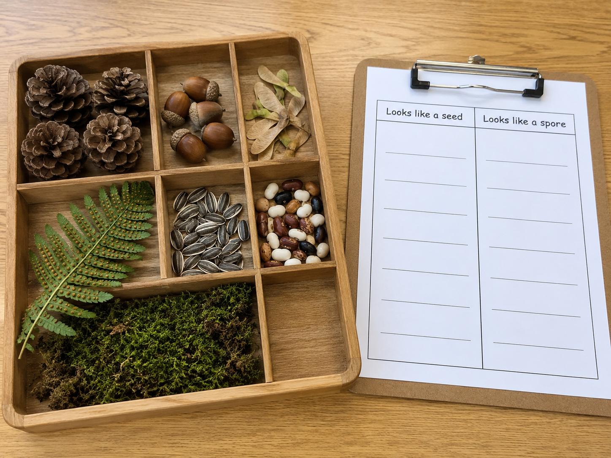

Hold this question as you work. By the end, you'll be able to answer it with evidence from your own sorting lab.
Start here. Learn the words you will use today.
Imagine you're outside and you find two tiny things on the ground. One came from inside an apple. The other is dusty powder on the underside of a fern leaf. They are both incredibly small. They both have something to do with making new plants.
No wrong answers here. We'll come back to your question at the end of the lesson to see if you can answer it.
These are the words scientists use when studying how plants reproduce. Tap each card to flip it and read the definition. You'll use all of these in the lab today.
Copy this sentence carefully into your science notebook:
"Both seeds and spores help plants reproduce, but they are not the same."
Now learn the main science idea.
Many plants reproducereproduceTo make new living things of the same kind. using seedsseedA plant part that can grow into a new plant. It has a protective coat and a tiny embryo inside.. A seed holds a tiny embryo — the beginning of a new plant — protected inside a tough outer coat.
Seeds come from flowers, fruits, and cones. After they form, they travel. Some ride on wind, some float on water, and some stick to passing animals. A seed that lands in a good spot — with water, warmth, and the right soil — can start to grow.
Ferns, mosses, and some other plants never make seeds. Instead, they reproduce with sporessporeA tiny single cell that can grow into a new plant. Much smaller than a seed.. A spore is just one tiny cell — far smaller than any seed. You often can't see spores without a magnifying glass.
Spores form on the underside of fern leaves in small clusters. When conditions are right, the plant releases them. They drift through air or water until they settle somewhere new.
How do scientists tell seeds and spores apart? They look at the evidenceevidenceInformation you observe that supports an explanation.: size, where it came from, whether it has a coat. A large, oval structure inside a fruit is almost certainly a seed. Powdery dust on a fern leaf? Almost certainly spores.
Sometimes there isn't enough evidence to be sure. That's okay. Scientists write "not enough information" rather than guess. It's more honest — and more useful.
Real-World Connection: Botanists — scientists who study plants — sort and classify plant parts every time they discover a new species.
Seeds and spores both help plants reproduce. But a seed carries a protected embryo and stored food inside a coat, while a spore is just one tiny cell with no protective layer. Their size, structure, and source are what scientists use to tell them apart.
Curious? Go Deeper
Ferns have been reproducing with spores for hundreds of millions of years — long before the first flowers ever existed. When dinosaurs walked the Earth, enormous fern forests covered much of the land, all reproducing by spores drifting on ancient winds.
Flowering plants came much later. They figured out a new trick: wrap the embryo in a fruit or a protective seed coat, and partner with animals and wind to carry seeds far away. It worked so well that flowering plants became the most common plants on Earth. But ferns and mosses are still here, still using spores, doing exactly what they did in the age of dinosaurs.
Now test the idea yourself.

You'll need: Science notebook, pencil, and a magnifying glass if you have one. Set up your sorting chart (below) before you start.
Read each plant clue below. For each one, look for evidence. Then decide: seed, spore, or not enough evidence? Record your thinking in the chart.
🗂 Plant Clues — A through F
| Clue | Evidence I observe (size, source, coating, etc.) | Seed, Spore, or Not Sure? |
|---|---|---|
| A | ||
| B | ||
| C | ||
| D | ||
| E | ||
| F |
Work through these steps in order:
Read the clues: Go through Clues A–F one at a time. Read each description carefully before making any decisions.
Write your evidence: In the middle column of your chart, write what you observe about each clue — its size, where it came from, whether it has a coat.
Sort each clue: Write your classification in the last column — seed, spore, or not enough evidence. Use the evidence you wrote, not just a guess.
Find a pattern: Look across all your clues. Write one sentence in your notebook describing a pattern you notice — something that most seeds share, or something that made the spore clues different.
Think about your findings. A good scientist thinks carefully about what they observed — not just "it was a seed" but why they think so.
Tell the story of your sorting lab — what you did first, what you noticed, and what you figured out by the end. Use your chart to help you.
Think through each question on your own. Write your answers in your science notebook before moving on.
Check what you understand.
Show what you learned.
🔍 Part A — Sort & Identify
Use your completed sorting chart from the Explore tab. For each question, write your answer in complete sentences.
🚀 Part B — Short Answer
Write each answer in a complete sentence. Use your science vocabulary.
What is the biggest difference between seeds and spores, and how does that difference matter for the plant?
What do you think?
💡 Start with: "I think the biggest difference is…"
What did you observe that supports your thinking?
💡 Start with: "I know this because during the sorting lab, I observed…"
Why does that make sense?
💡 Start with: "This makes sense because…"
📚 Try to use at least one of these words in your answer: seed, spore, classify, evidence, reproduce
🎨 Part C — Draw & Label
Draw a seed and a spore cluster side by side. Label at least 4 parts total across both drawings (for example: seed coat, embryo, hilum, spore, cluster, scattered).
Submit your work on Canvas using one of these options:
Make sure your submission includes all of these: